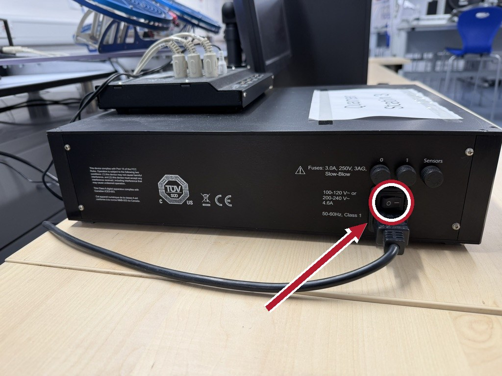
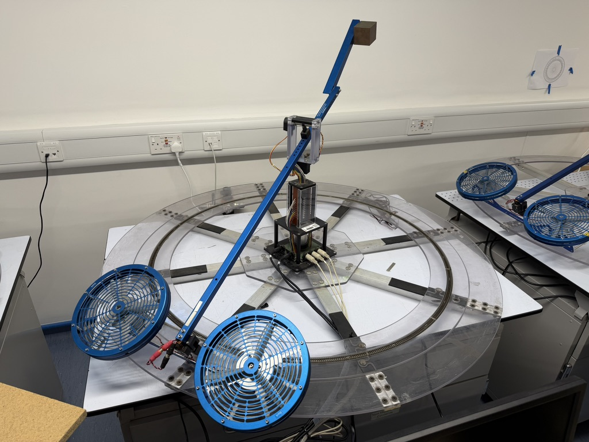

The Quanser laboratory¶
The laboratory runs one experiment in three parts:
| Part | Where | Roughly |
|---|---|---|
| 1. Identify | At the rig | One 2-hour session |
| 2. Design | Anywhere | Your own time, between sessions |
| 3. Validate | At the rig | One 2-hour session |
Booking¶
Book sessions through the form linked on Blackboard. Work in pairs or threes, one person books for the group.
Before you go¶
- Read Part 1 all the way through in advance.
- Bring a laptop if you have one. The bench machines are online and should sync to OneDrive when you log in, but it's good to check.
- Download the laboratory software from MATLAB Drive into a folder you can find. The code page says what each file is for.
- Agree who is driving MATLAB and who is taking notes. Swap half way.
Check the version before each session
This format is new for 2026/27, and I'll be updating based on your feedback. Before each lab session, compare the version below with the README in your copy. If they differ, download the folder again.
Your recordings do not go stale. The scripts may change, but data you
measured will still load and still fit under a later version, because the
format is the one the rig's own s_save writes.
Download everything you run in the laboratory from MATLAB Drive, or everything for the unit.
Version 2026.25, 2026-10-13. If this differs from the version in the folder's own README, download it again.
Safety briefing¶
The amplifier switch is the e-stop
The rocker switch on the amplifier is the emergency stop. If the rig does something you do not like, switch the amplifier off. Do not try to fix it in software while it is moving.

Low-flying aircraft
Beyond that: keep fingers and hair away from the rotors, do not lean over the arm's travel, and although the rotors are guarded do watch your fingers.
Take care, be mindful of others
Bear in mind others will be relying on the equipment, and sharing the lab, so keep it in working order and tidy. Catch the body of the Quanser if you can to avoid bumpy landings. The lab is maintained by Technical Services: if anything isn't working, email engf-tech-hub@bristol.ac.uk and copy me in. Say which station you were on, what the problem was, and what you've tried to do to resolve it, if anything.
What you are aiming for¶
You can try this lab twice, at two levels. Do the single-axis version first.
One axis. Elevation alone, with the other two held still. A second-order plant, a PID controller, and a requirement you can verify. Everything in the first lecture applies directly.
Three axes. The whole machine: elevation, pitch and travel, two motors, and the coupling between them. First as three PID loops, which is what many real vehicles fly with and which will show you why decoupling is a design decision. Then as a state-space design against the model the manufacturer supplies, which we touch on late in the unit.
Most groups get one axis working comfortably in their two sessions, three axes can be considered an extension if you have the time.
The rig¶

Three angles, two motors. Quanser's sign conventions:
| Axis | Symbol | Positive when |
|---|---|---|
| Elevation | \( \varepsilon \) | the body is above horizontal; zero when level |
| Pitch | \( \rho \) | the front motor is higher than the back motor |
| Travel | \( \lambda \) | the body rotates counter-clockwise, seen from above. It turns continuously, and wraps back to zero at 360 degrees |
Note in the lab code that the encoders zero wherever they are when the model starts running - this will give you an offset from Quanser's zero.
You (usually via a control system running in Simulink) command two rotor voltages. Elevation is affected by their sum and pitch by their difference. Travel is not commanded at all: it happens because pitch tilts the thrust vector sideways and accelerates the machine around the track. This is referred to as coupling of degrees of freedom, and it is why three axes is harder than three times one axis.
Each rotor is driven about an operating voltage of roughly 7.5 V, which is what holds the arm up. Your controller's output is added to that, so what you have to play with is the headroom between there and the amplifier's limit.
Research-grade aerospace machinery¶
Notice the model railway track embedded in the ring around the base of one Quanser? This machine was used a while back to model aerial/ground vehicle collaborative control.
A model train ran around the track, linked into the control system for forward and reverse. A camera attached to the Quanser tracked a marker on the train, and the two worked together to maintain relative position. See Jones and Richardson's paper for more info. This laid the groundwork for autonomously landing a petrol-powered remote-control helicopter on the roof of a moving Rover 400 on an abandoned Cornish airfield, and a paper that makes it look quite professional.